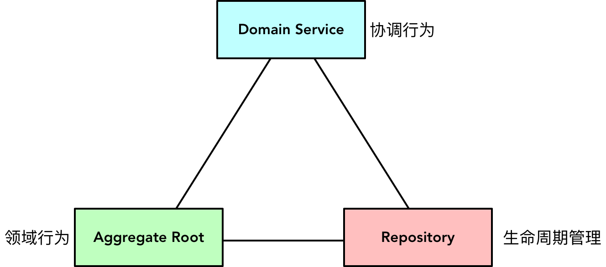

- 001 「战略篇」访谈 DDD 和微服务是什么关系？.md.html
- 002 「战略篇」开篇词：领域驱动设计，重焕青春的设计经典.md.html
- 003 领域驱动设计概览.md.html
- 004 深入分析软件的复杂度.md.html
- 005 控制软件复杂度的原则.md.html
- 006 领域驱动设计对软件复杂度的应对（上）.md.html
- 007 领域驱动设计对软件复杂度的应对（下）.md.html
- 008 软件开发团队的沟通与协作.md.html
- 009 运用领域场景分析提炼领域知识（上）.md.html
- 010 运用领域场景分析提炼领域知识（下）.md.html
- 011 建立统一语言.md.html
- 012 理解限界上下文.md.html
- 013 限界上下文的控制力（上）.md.html
- 014 限界上下文的控制力（下）.md.html
- 015 识别限界上下文（上）.md.html
- 016 识别限界上下文（下）.md.html
- 017 理解上下文映射.md.html
- 018 上下文映射的团队协作模式.md.html
- 019 上下文映射的通信集成模式.md.html
- 020 辨别限界上下文的协作关系（上）.md.html
- 021 辨别限界上下文的协作关系（下）.md.html
- 022 认识分层架构.md.html
- 023 分层架构的演化.md.html
- 024 领域驱动架构的演进.md.html
- 025 案例 层次的职责与协作关系（图文篇）.md.html
- 026 限界上下文与架构.md.html
- 027 限界上下文对架构的影响.md.html
- 028 领域驱动设计的代码模型.md.html
- 029 代码模型的架构决策.md.html
- 030 实践 先启阶段的需求分析.md.html
- 031 实践 先启阶段的领域场景分析（上）.md.html
- 032 实践 先启阶段的领域场景分析（下）.md.html
- 033 实践 识别限界上下文.md.html
- 034 实践 确定限界上下文的协作关系.md.html
- 035 实践 EAS 的整体架构.md.html
- 036 「战术篇」访谈：DDD 能帮开发团队提高设计水平吗？.md.html
- 037 「战术篇」开篇词：领域驱动设计的不确定性.md.html
- 038 什么是模型.md.html
- 039 数据分析模型.md.html
- 040 数据设计模型.md.html
- 041 数据模型与对象模型.md.html
- 042 数据实现模型.md.html
- 043 案例 培训管理系统.md.html
- 044 服务资源模型.md.html
- 045 服务行为模型.md.html
- 046 服务设计模型.md.html
- 047 领域模型驱动设计.md.html
- 048 领域实现模型.md.html
- 049 理解领域模型.md.html
- 050 领域模型与结构范式.md.html
- 051 领域模型与对象范式（上）.md.html
- 052 领域模型与对象范式（中）.md.html
- 053 领域模型与对象范式（下）.md.html
- 054 领域模型与函数范式.md.html
- 055 领域驱动分层架构与对象模型.md.html
- 056 统一语言与领域分析模型.md.html
- 057 精炼领域分析模型.md.html
- 058 彩色 UML 与彩色建模.md.html
- 059 四色建模法.md.html
- 060 案例 订单核心流程的四色建模.md.html
- 061 事件风暴与业务全景探索.md.html
- 062 事件风暴与领域分析建模.md.html
- 063 案例 订单核心流程的事件风暴.md.html
- 064 表达领域设计模型.md.html
- 065 实体.md.html
- 066 值对象.md.html
- 067 对象图与聚合.md.html
- 068 聚合设计原则.md.html
- 069 聚合之间的关系.md.html
- 070 聚合的设计过程.md.html
- 071 案例 培训领域模型的聚合设计.md.html
- 072 领域模型对象的生命周期-工厂.md.html
- 073 领域模型对象的生命周期-资源库.md.html
- 074 领域服务.md.html
- 075 案例 领域设计模型的价值.md.html
- 076 应用服务.md.html
- 077 场景的设计驱动力.md.html
- 078 案例 薪资管理系统的场景驱动设计.md.html
- 079 场景驱动设计与 DCI 模式.md.html
- 080 领域事件.md.html
- 081 发布者—订阅者模式.md.html
- 082 事件溯源模式.md.html
- 083 测试优先的领域实现建模.md.html
- 084 深入理解简单设计.md.html
- 085 案例 薪资管理系统的测试驱动开发（上）.md.html
- 086 案例 薪资管理系统的测试驱动开发（下）.md.html
- 087 对象关系映射（上）.md.html
- 088 对象关系映射（下）.md.html
- 089 领域模型与数据模型.md.html
- 090 领域驱动设计对持久化的影响.md.html
- 091 领域驱动设计体系.md.html
- 092 子领域与限界上下文.md.html
- 093 限界上下文的边界与协作.md.html
- 094 限界上下文之间的分布式通信.md.html
- 095 命令查询职责分离.md.html
- 096 分布式柔性事务.md.html
- 097 设计概念的统一语言.md.html
- 098 模型对象.md.html
- 099 领域驱动设计参考过程模型.md.html
- 100 领域驱动设计的精髓.md.html
- 101 实践 员工上下文的领域建模.md.html
- 102 实践 考勤上下文的领域建模.md.html
- 103 实践 项目上下文的领域建模.md.html
- 104 实践 培训上下文的业务需求.md.html
- 105 实践 培训上下文的领域分析建模.md.html
- 106 实践 培训上下文的领域设计建模.md.html
- 107 实践 培训上下文的领域实现建模.md.html
- 108 实践 EAS 系统的代码模型.md.html
- 109 后记：如何学习领域驱动设计.md.html
090 领域驱动设计对持久化的影响
资源库的实现
如何重用资源库的实现，以及如何隔离领域层与基础设施层的持久化实现机制，在 3-10 课《领域模型对象的生命周期-资源库》中已有详细讲解，具体的实现还要取决于开发者对 ORM 框架的选择。Hibernate、MyBatis、jOOQ 或者 Spring Data JPA（当然也包括基于 .NET 的 Entity Framework、NHibernate 或 Castle 等），每种框架自有其设计思想和原则，提供了不同的最佳实践来指导开发人员以更适宜的方式编写持久化实现。当然，在领域驱动设计中，无论选择什么样的 ORM 框架，设计为资源库模式是基本的要求。
在我实现的 payroll-ddd 项目中，尝试在资源库实现中以组合方式重用持久化机制。首先，需要实现一个与聚合根无关的通用聚合 Repository 类：
public class Repository<E extends AggregateRoot, ID extends Identity> {
private Class<E> entityClass;
private EntityManager entityManager;
private TransactionScope transactionScope;
public Repository(Class<E> entityClass, EntityManager entityManager) {
this.entityClass = entityClass;
this.entityManager = entityManager;
this.transactionScope = new TransactionScope(entityManager);
}
public Optional<E> findById(ID id) {
requireEntityManagerNotNull();
E root = entityManager.find(entityClass, id);
if (root == null) {
return Optional.empty();
}
return Optional.of(root);
}
public List<E> findAll() {
requireEntityManagerNotNull();
CriteriaQuery<E> query = entityManager.getCriteriaBuilder().createQuery(entityClass);
query.select(query.from(entityClass));
return entityManager.createQuery(query).getResultList();
}
public List<E> findBy(Specification<E> specification) {
requireEntityManagerNotNull();
if (specification == null) {
return findAll();
}
CriteriaBuilder criteriaBuilder = entityManager.getCriteriaBuilder();
CriteriaQuery<E> query = criteriaBuilder.createQuery(entityClass);
Root<E> root = query.from(entityClass);
Predicate predicate = specification.toPredicate(criteriaBuilder, query, root);
query.where(new Predicate[]{predicate});
TypedQuery<E> typedQuery = entityManager.createQuery(query);
return typedQuery.getResultList();
}
public void saveOrUpdate(E entity) {
requireEntityManagerNotNull();
if (entity == null) {
return;
}
if (entityManager.contains(entity)) {
entityManager.merge(entity);
} else {
entityManager.persist(entity);
}
}
public void delete(E entity) {
requireEntityManagerNotNull();
if (entity == null) {
return;
}
if (!entityManager.contains(entity)) {
return;
}
entityManager.remove(entity);
}
private void requireEntityManagerNotNull() {
if (entityManager == null) {
throw new InitializeEntityManagerException();
}
}
public void finalize() {
entityManager.close();
}
}
Repository 类的内部使用了 JPA 的 EntityManager 来管理实体的生命周期，分别提供了增删改查等方法。其中，增加和修改方法由 saveOrUpdate() 方法来实现，查询方法则定义了 findBy(Specification
在有了这样一个通用的资源库实现之后，就可以在每个聚合根资源库的实现类中，以组合方式调用它。例如 HourlyEmployeeRepository 接口及其实现类：
package top.dddclub.payroll.payrollcontext.domain.hourlyemployee;
public interface HourlyEmployeeRepository {
Optional<HourlyEmployee> employeeOf(EmployeeId employeeId);
List<HourlyEmployee> allEmployeesOf();
void save(HourlyEmployee employee);
}
package top.dddclub.payroll.payrollcontext.gateway.persistence;
public class HourlyEmployeeJpaRepository implements HourlyEmployeeRepository {
private Repository<HourlyEmployee, EmployeeId> repository;
public HourlyEmployeeJpaRepository(Repository<HourlyEmployee, EmployeeId> repository) {
this.repository = repository;
}
@Override
public Optional<HourlyEmployee> employeeOf(EmployeeId employeeId) {
return repository.findById(employeeId);
}
@Override
public List<HourlyEmployee> allEmployeesOf() {
return repository.findAll();
}
@Override
public void save(HourlyEmployee employee) {
if (employee == null) {
return;
}
repository.saveOrUpdate(employee);
}
}
**注意：**资源库接口与实现的分离，保证了领域层的领域模型对象仅依赖于属于领域层的资源库接口，解除了对基础设施层的依赖。
资源库的实现原则
要将领域驱动设计的资源库与 ORM 框架的使用结合起来，需要注意资源库与数据访问对象的差异。在选择资源库模式进行实现建模时，必须遵循以下原则：
- 保证资源库接口不要混入基础设施的实现
- 一个聚合对应一个资源库
- 在领域层，只有领域服务才依赖于资源库
不管选择什么样的 ORM 框架，为每个聚合定义一个资源库接口，是必须遵守的设计底线。倘若需要访问聚合边界内除根实体在外的其他实体或值对象，必须通过聚合根进行访问；如果要持久化这些对象，也必须交由聚合对应的资源库来实现。
以薪资管理系统为例，要访问 TimeCard，只能通过 HourlyEmployee 聚合根实体进行访问；倘若要持久化 TimeCard，则必须通过 HourlyEmployeeRepository 资源库的实现类完成，而不应该为 TimeCard 定义专有的资源库。
虽然 HourlyEmployeeRepository 资源库会负责对 TimeCard 的持久化，但它不会直接持久化 TimeCard 对象，而是通过管理 HourlyEmployee 聚合的生命周期完成的。例如，钟点工提交工作时间卡的领域行为需分配给 HourlyEmployee 聚合根。在实现该领域行为时，并不需要考虑具体的持久化实现机制，因为它仅仅操作了内存中的聚合根实例：
public class HourlyEmployee extends AbstractEntity<EmployeeId> implements AggregateRoot<HourlyEmployee> {
@OneToMany(cascade = CascadeType.ALL, orphanRemoval = true)
@JoinColumn(name = "employeeId", nullable = false)
private List<TimeCard> timeCards = new ArrayList<>();
public void submit(List<TimeCard> submittedTimeCards) {
for (TimeCard card : submittedTimeCards) {
this.submit(card);
}
}
public void submit(TimeCard submittedTimeCard) {
if (!this.timeCards.contains(submittedTimeCard)) {
this.timeCards.add(submittedTimeCard);
}
}
}
submit() 方法通过调用 List
领域服务的协调价值
领域模型不建议聚合直接依赖资源库，更不能将持久化的职责分配给聚合。如果一个业务需求需要将状态的变更持久化到数据库中，就需要调用资源库的实现。这就需要领域服务来协调聚合与资源库之间的行为。
例如，钟点工提交工作时间卡是由 HourlyEmployee 聚合完成的，但要完成工作时间卡的提交需求，还需要将工作时间卡记录持久化到数据库，这牵涉到 HourlyEmployee 与 HourlyEmployeeRepository 之间的协作。可以定义领域服务 TimeCardService：
public class TimeCardService {
private HourlyEmployeeRepository employeeRepository;
public void setEmployeeRepository(HourlyEmployeeRepository employeeRepository) {
this.employeeRepository = employeeRepository;
}
public void submitTimeCard(EmployeeId employeeId, TimeCard submitted) {
Optional<HourlyEmployee> optEmployee = employeeRepository.employeeOf(employeeId);
optEmployee.ifPresent(e -> {
e.submit(submitted);
employeeRepository.save(e);
});
}
}
领域服务的 submitTimeCard() 方法先通过 EmployeeId 查询获得 HourlyEmployee 对象，这是生命周期管理中对聚合根实体对象的重建。资源库通过 ORM 重建聚合根实体时，会将它附加（attach）到持久化上下文中，它的任何变更都可以被ORM框架侦听到，通过实体的ID也能明确该对象的身份。因此，当 HourlyEmployee 执行 submit(timecard) 方法时，工作时间卡的新增操作就被记录在持久化上下文中，直到执行资源库的 save() 方法时，持久化上下文才会完成对这一变更的提交。
领域服务、资源库和聚合根实体三者非常默契地履行各自的职责。核心的业务行为分配给聚合根实体，它操作着属于它以及它边界内的数据，自我地履行着自治的领域行为；资源库负责与数据库交互，完成领域模型与数据模型之间的映射，并通过抽象接口隔离与具体技术实现的依赖；领域服务对外提供完整的业务功能，对内则负责资源库与聚合根实体之间的协调。这就是领域层中三种角色构造型的理想协作机制：

当然，领域服务不仅仅负责聚合根实体与资源库的协调行为，它还可以协调多个聚合根实体之间的协作，也可以单独履行那些与状态无关的领域行为。在领域驱动设计中，领域服务的定义是最自由的，但我们需要限制它的自由度，即优先考虑将领域行为分配给聚合内的值对象或实体，而非领域服务。
在利用测试驱动开发驱动领域服务的实现时，若牵涉到领域服务与资源库之间的协作，应通过 Mock 框架模拟资源库的行为，这样可以隔离对外部资源的依赖，让测试的反馈更加快速。但是，为了保证领域实现模型的正确性，应考虑为资源库的实现类编写集成测试，这样就可以验证通过领域驱动设计得到的领域模型是否满足编码实现的要求：
public class HourlyEmployeeJpaRepositoryIT {
private EntityManager entityManager;
private Repository<HourlyEmployee, EmployeeId> repository;
private HourlyEmployeeJpaRepository employeeRepo;
@Befor
public void setUp() {
entityManager = EntityManagerFixture.createEntityManager();
repository = new Repository<>(HourlyEmployee.class, entityManager);
employeeRepo = new HourlyEmployeeJpaRepository(repository);
}
@Test
public void should_submit_time_card_then_remove_it() {
EmployeeId employeeId = EmployeeId.of("emp200109101000001");
HourlyEmployee hourlyEmployee = employeeRepo.employeeOf(employeeId).get();
assertThat(hourlyEmployee).isNotNull();
assertThat(hourlyEmployee.timeCards()).hasSize(5);
TimeCard repeatedCard = new TimeCard(LocalDate.of(2019, 9, 2), 8);
hourlyEmployee.submit(repeatedCard);
employeeRepo.save(hourlyEmployee);
hourlyEmployee = employeeRepo.employeeOf(employeeId).get();
assertThat(hourlyEmployee).isNotNull();
assertThat(hourlyEmployee.timeCards()).hasSize(5);
TimeCard submittedCard = new TimeCard(LocalDate.of(2019, 10, 8), 8);
hourlyEmployee.submit(submittedCard);
employeeRepo.save(hourlyEmployee);
hourlyEmployee = employeeRepo.employeeOf(employeeId).get();
assertThat(hourlyEmployee).isNotNull();
assertThat(hourlyEmployee.timeCards()).hasSize(6);
hourlyEmployee.remove(submittedCard);
employeeRepo.save(hourlyEmployee);
assertThat(hourlyEmployee.timeCards()).hasSize(5);
}
}
**说明：**由于单元测试和集成测试的反馈速度不同，且后者还要依赖于真实的数据库环境，因此建议在项目工程中分离单元测试和集成测试。例如在 Java 项目中使用 Maven 的 failsafe 插件，它规定了集成测试的命名规范，如以 *IT 结尾的测试类，只有运行 mvn integration-test 命令才会执行这些集成测试。
事务的处理机制
领域驱动设计对事务的处理要受到限界上下文和聚合定义的影响。限界上下文和聚合是两个不同粒度的边界，当限界上下文作为进程间的通信边界时，还需要考虑微服务之间的事务处理机制。我在 3-6 课《聚合之间的关系》中以一幅图分析了这三个层次与事务之间的关系：
由于跨限界上下文以及跨微服务之间的协作与战略设计有关，对事务的处理一般会选择满足数据最终一致性的柔性事务模式，我将在第五部分《融合：战略设计与战术设计》中讲解分布式通信机制对战术建模带来的影响，这其中就有对分布式事务的考虑，因此在这里不再展开讲解。
虽然在设计聚合时，要求将聚合作为事务一致性的原子单元，但由于领域驱动设计一直强调不要让基础设施层的技术实现干扰领域建模的决定，因此聚合本身应做到对事务没有感知。领域驱动设计原则要求一个聚合对应一个资源库，并保证在一个事务中只修改一个聚合实例；同时，资源库会负责聚合内所有对象的持久化，这是否意味着要在资源库实现中进行事务控制呢？
并不尽然！尽管事务是一种技术实现机制，但对事务提出需求却要从业务角度考虑。一个完整的业务用例必须考虑异常流程，尤其牵涉到对外部资源的操作，往往会因为诸多偶发现象或不可预知的错误导致操作失败，而事务就是用来确保业务用例一致性的技术手段。由于领域驱动设计的分层架构规定应用服务作为业务用例的对外接口，之前在讲解应用服务时，我也提到它应承担调用横切关注点的职责。事务作为一种横切关注点，将其放在应有服务才是合情合理的。Vaughn Vernon 就认为：
通常来说，我们将事务放在应用层中。常见的做法是为每一组相关用例创建一个外观（Facade）。外观中的业务方法往往定义为粗粒度方法，常见的情况是每一个用例流对应一个业务方法。业务方法对用例所需操作进行协调。调用外观中的一个业务方法时，该方法都将开始一个事务。同时，该业务方法将作为领域模型的客户端而存在。在所有的操作完成之后，外观中的业务方法将提交事务。在这个过程中，如果发生错误/异常，那么业务方法将对事务进行回滚。
要将对领域模型的修改添加到事务中，我们必须保证资源库实现与事务使用了相同的会话（Session）或工作单元（Unit of Work）。这样，在领域层中发生的修改才能正确地提交到数据库中，或者回滚。
由此可见，我们应该站在业务用例的角度去思考事务以及事务的范围。《实现领域驱动设计》的译者滕云就认为：“事务应该与业务用例一一对应，而资源库其实只是聚合根的持久化，并不能匹配到某个独立的业务中。”遵循这一观点，则资源库的实现就无需考虑事务，所谓的持久化其实是在自己的持久化上下文（Persistence Context）提供的缓存中进行，直到满足事务要求的完整业务用例执行完毕，再进行真正的数据库持久化，这就可以避免事务的频繁提交。事实上，JPA 定义的 persist()、merge() 等方法就没有将数据即时提交到数据库，而是由JPA缓存起来，当真正需要提交数据变更时，通过获得 EntityTransaction 且调用它的 commit() 方法进行真正的持久化。
在应用服务中完成一个完整业务用例的操作事务，就是一个工作单元（Unit of Work）。根据 Martin Fowler 的定义，一个工作单元负责“维护一个被业务事务影响的对象列表，协调变化的写入和并发问题的解决”。在领域驱动设计中，既然应用服务的接口对外代表了一个完整的业务用例，就应该在应用服务中通过一个工作单元来维护一个或多个聚合，并协调这些聚合对象的变化与并发。实际上，Spring 提供的 @Transactional 标注其实就是通过 AOP 的方式实现了一个工作单元。因此，我们只需要在应用服务的方法上添加事务标注即可：
@Transactional(rollbackFor = Exception.class)
public class OrderAppService {
@Service
private PlaceOrderService placeOrder;
public void placeOrder(Identity buyerId, List<OrderItem> items, ShippingAddress shipping, BillingAddress billing) {
try {
palceOrder.execute(buyerId, items, shipping, billing);
} catch (OrderRepositoryException | InvalidOrderException | Exception ex) {
ex.printStackTrace();
logger.error(ex.getMessage());
}
}
}
即使 PlaceOrderService 调用的 OrderRepository 资源库没有实现事务，OrderAppService 应用服务在实现下订单业务用例时，通过 @Transactional 就可以控制事务，真正提交订单到数据库，并扣减库存中商品的数量；若操作时抛出了 Exception 异常，就会执行回滚，避免订单、订单项以及库存之间产生数据的不一致。
虽然要求在应用服务中实现事务，但它与资源库是否使用事务并不矛盾。事实上，许多 ORM 框架的原子操作已经支持了事务。例如，使用Spring Data JPA 框架时，倘若聚合的资源库接口继承自 CrudRepository 接口，则框架通过代理生成的实现调用了框架的 SimpleJpaRepository 类，它提供的 save() 与 delete() 等方法都标记了 @Transacational 标注：
@Repository
@Transactional(readOnly = true)
public class SimpleJpaRepository<T, ID> implements JpaRepositoryImplementation<T, ID> {
@Transactional
@Override
public <S extends T> S save(S entity) {
if (entityInformation.isNew(entity)) {
em.persist(entity);
return entity;
} else {
return em.merge(entity);
}
}
@Transactional
@SuppressWarnings("unchecked")
public void delete(T entity) {
Assert.notNull(entity, "Entity must not be null!");
if (entityInformation.isNew(entity)) {
return;
}
Class<?> type = ProxyUtils.getUserClass(entity);
T existing = (T) em.find(type, entityInformation.getId(entity));
// if the entity to be deleted doesn't exist, delete is a NOOP
if (existing == null) {
return;
}
em.remove(em.contains(entity) ? entity : em.merge(entity));
}
}
倘若资源库实现与应用服务都支持了事务，就必须满足约束条件：资源库的事务与应用服务的事务应使用相同的会话，例如配置了相同的 EntityManager 或者相同的 TransactionManager。这时，会产生多个事务方法的嵌套调用，它的行为取决于设置的事务传播（Propagation）值。例如，设置为 Propagation.Required 传播行为，就会在没有事务的情况下新建一个事务，在已有事务的情况下，加入当前事务。
有时候，一个应用服务需要调用另一个限界上下文提供的服务。倘若该限界上下文与当前限界上下文运行在同一个进程中，数据也持久化在同一个数据库，虽然在业务逻辑边界上分属两个不同的限界上下文，但基础设施的技术实现却可以实现为同一个本地事务。无论当前限界上下文对上游应用服务的调用是否使用了防腐层，只要保证它们的事务使用了相同的会话，就能保证事务的一致性。倘若都是在应用服务上配置 @Transactional，就只需保证各自限界上下文的事务配置保持一致即可，不会影响各自限界上下文的编程模型。
如果两个限界上下文的应用服务分别操作了不同的数据库，这两个应用服务又需要控制在一个事务边界，就会产生分布式事务。不仅如此，有时候为了提升性能，还会对一个限界上下文的数据库进行分库分表，同样牵涉到分布式事务的问题。
满足强一致性的分布式事务要解决的问题比本地事务复杂，因为它需要管理和协调所有分布式节点的事务资源，保证这些事务资源能够做到共同成功或者共同失败。为了实现这一目标，可以遵循 X/Open 组织为分布式事务处理制定的标准协议——XA 协议。遵循 XA 协议的方案包括二阶段提交协议，以及基于它进行改进的三阶段提交协议。无论是哪一种协议，出发点都是在提交之前增加更多的准备阶段，使得参与事务的各个节点满足数据一致性的几率更高，但对外的表征其实与本地事务并无不同之处，都是成功则提交，失败则回滚。简言之，满足 ACID 要求的本地事务与分布式事务可以抽象为相同的事务模型，区别仅在于具体的事务机制的实现。当然，遵循 XA 协议在实现分布式事务时，存在一个技术实现的约束：即要求参与全局事务范围的资源必须支持 XA 规范。许多主流的关系数据库、消息中间件都支持 XA 规范，因此可以通过它实现跨数据库、消息中间件等资源的分布式事务。
如前所述，由于事务与领域之间的交汇点集中在应用服务，它以横切关注点的方式调用事务，对本地事务和分布式事务的选择是透明的，对领域模型的设计与实现并无任何影响。例如，JTA（Java Transaction API）作为遵循 XA 协议的 Java 规范，屏蔽了底层事务资源以及事务资源的协作，以透明方式参与到事务处理中。例如，Spring 框架就引入了 JtaTransactionManager，可以通过编程方式或声明方式支持分布式事务。
以外卖系统的订单服务为例，在下订单成功之后，需要创建一个工单通知餐厅。下订单会操作订单数据库，创建工单会操作工单数据库，分别由 OrderRepository 与 TicketRepository 分别操作者两个库的数据，二者必须保证数据的强一致性。如果使用 Spring 编程方式实现分布式事务，代码大致如下：
public class OrderAppService {
@Resource(name = "springTransactionManager")
private JtaTransactionManager txManager;
@Autowired
private OrderRepository orderRepo;
@Autowired
private TicketRepository ticketRepo;
public void placeOrder(Order order) {
UserTransaction transaction = txManager.getUserTransaction();
try {
transaction.begin();
orderRepo.save(order);
ticketRepo.save(createTicket(order));
transaction.commit();
} catch (Exception e) {
try {
transaction.rollback();
} catch (IllegalStateException | SecurityException | SystemException ex) {
logger.warn(ex.getMessage());
}
}
}
}
显然，对 UserTransaction 的调用与本地事务的方式如出一辙，都可以统一为工作单元模式。具体的差异在于配置的数据源与事务管理器不同。如果采用标注进行声明式编程，同样可以使用 @Transactional 标注，在编程实现上就完全看不到本地事务与分布式事务的差异了。